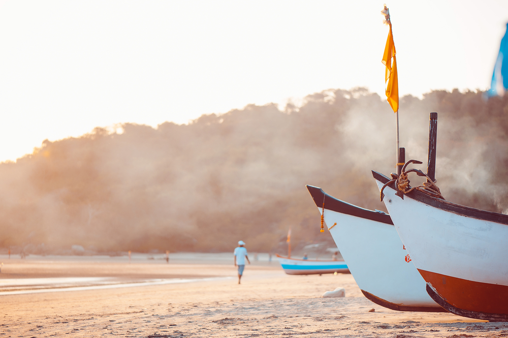
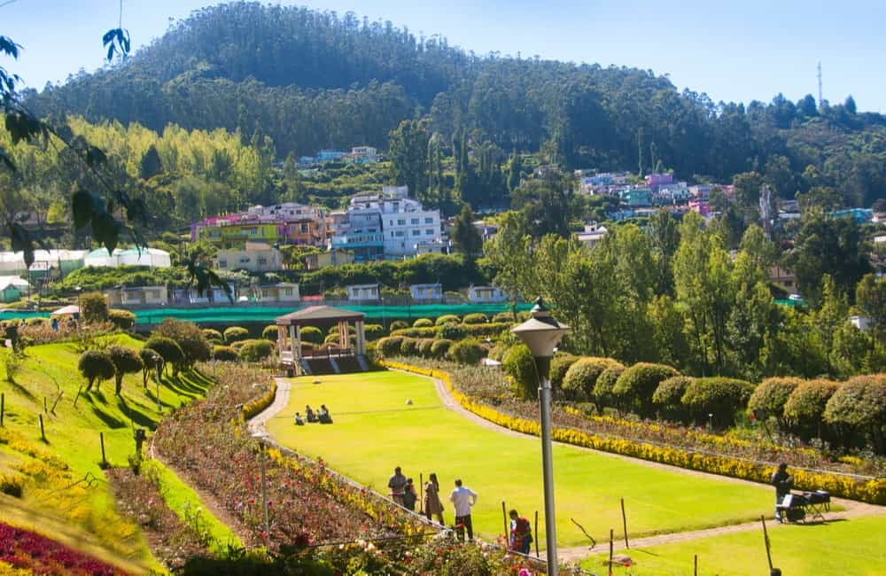
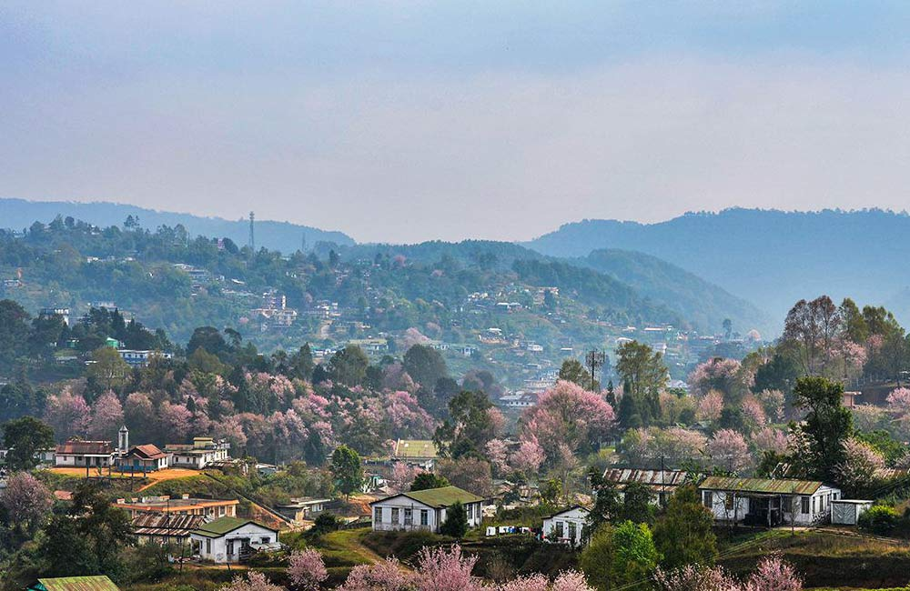
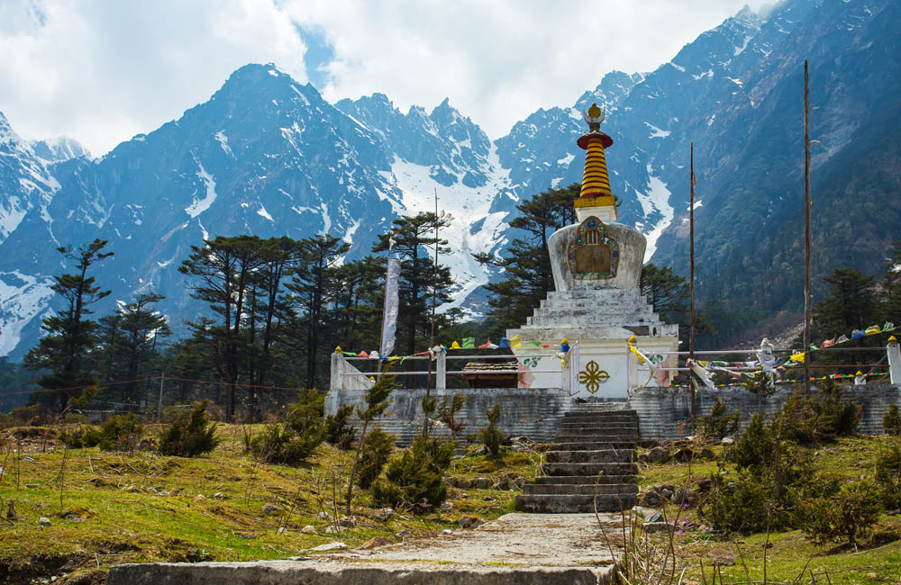

Popular Places in India
1. Goa

Famous for its pristine beaches, hippie vibes, laidback lifestyle and vibrant
parties, Goa is
counted among the best holiday destinations in India. The union territory is frequented by tourists
year-round, especially in the winter season when the climate is pleasant, and the entire place comes
alive with Christmas and New Year celebrations. However, seasoned tourists do not shun Goa during
summer either. If you are looking for a peaceful and economical holiday, try to visit Goa during the
offseason when the sun-kissed beaches, flea markets and other attractions are less crowded.
- Best Time to Visit: November to February
- Ideal Duration: 4-5 days
- Places to Visit in Goa: Palolem Beach, Dudhsagar Falls, Basilica of Bom Jesus, Aguada Fort, Baga Beach, Anjuna Beach, Calangute Beach, Shree Mangesha Temple, Immaculate Conception Church
- Things to Do in Goa: Beach hopping, water sports, shopping at flea markets, visiting Portuguese-style churches, enjoying the nightlife, tasting authentic Goan cuisine
- How to Reach
- Nearest Airport: Dabolim International Airport
- Nearest Train Station: Vasco-Da-Gama Railway Station (North Goa); Madgaon Junction (South Goa)
2. Agra

Say Agra and the first thing that comes to mind is the magnificent Taj Mahal, one
of the Seven Wonders of the World. This beautiful city with its rich historical background is
situated in Uttar Pradesh, on the banks of River Yamuna. It is counted among the top holiday
destinations for architecture lovers and history buffs, thanks to many amazing Mughal architectural
masterpieces that adorn the cityscape. No matter how many times you visit Agra, the charm of the Taj
Mahal and other monuments will never fail to impress. The city is a treat for shopaholics and
foodies as well.
- Best Time to Visit: October to March
- Ideal Duration: 2 days
- Places to Visit in Agra: Agra Fort, Jama Masjid, Abkar’s Tomb, Itimad-ud-Daulah’s Tomb, Mehtab Bagh, Gurudwara Guru Ka Taal, Dolphin Water Park, Wildlife Conservation and Care Centre
- Things to Do in Agra: Boat ride on Yamuna River, exploring popular monuments, watching the Light and Sound Show at Agra Fort, visiting Fatehpur Sikri, shopping at Kinari Bazaar, Subhash Bazaar and TDI Mall, relishing authentic Mughlai dishes and street foods
- How to Reach
- Nearest Airport: Agra Airport; New Delhi’s Indira Gandhi International Airport
- Nearest Train Station: Agra Cantonment Railway Station
3. Rajasthan

The land of kings, Rajasthan is a vibrant state that attracts history buffs,
architecture lovers, wildlife enthusiasts and foodies alike. It lies in the north-western part of
India and boasts an impressive amalgamation of natural beauty and manmade structures. From beautiful
lakes, vast deserts and rich wildlife to magnificent palaces, forts and temples, the city has so
many things for a wonderful vacation. What’s more, a road trip here takes you through several small
and beautiful villages showcasing rich Rajasthani culture and traditions. Rajasthan is one of those
places that you can visit again and again.
- Best Time to Visit: November to February
- Ideal Duration: 6-7 days
- Places to Visit in Rajasthan: Jaipur, Udaipur, Jaisalmer, Jodhpur, Bikaner, Mount Abu, Chittorgarh, Ranthambore National Park, Sariska Tiger Reserve, Keoladeo National Park
- Things to Do in Rajasthan: Exploring forts and palaces, paying respect at temples, enjoying folk dance and music festivals like Bikaner Camel Festival, Pushkar Fair, Gangaur Festival, Elephant Festival and Teej, visiting wildlife parks, gorging on delectable Rajasthani dishes, shopping
- How to Reach
- Nearest Airport: Jaipur International Airport, Maharana Pratap Airport , Jodhpur Airport, Jaisalmer Airport, New Delhi’s Indira Gandhi International Airport
- Nearest Train Station: Railway stations at Jaipur, Udaipur, Ajmer, Alwar, Bharatpur, Jaisalmer, Jodhpur, Kota, Nagaur, Sikar, Bikaner, etc
4. Delhi

New Delhi, the national capital of India, is one of the most cliched yet popular tourist destinations in the country. The state has so much to offer that visiting it once or twice is not enough. Delhi is dotted with iconic Mughal monuments, temples, heritage sites, performing arts venues, colourful bazaars, shopping malls, planetariums, museums, and restaurants, so there is something for everyone here. Chandni Chowk, the oldest and busiest market in the country, is in Delhi. The city also houses many places of political importance, like Rashtrapati Bhawan, Parliament of India, and India Gate.
- Best Time to Visit: October to March
- Ideal Duration: 3-4 days
- Places to Visit in Delhi: Red Fort, Humayun’s Tomb, Qutub Minar, Lotus Temple, Akshardham Temple, Purana Qila, Jantar Mantar, Gurudwara Bangla Sahib Ji, Nehru Park, Janpath Market
- Things to Do in Delhi: Explore Connaught Place, Sarojini Nagar Market and Hauz Khas Village, enjoy delicacies at Parathe Wali Gali, shop for handicrafts, souvenirs, antiques and more at Dilli Haat, experience Delhi’s nightlife, take a HoHo bus tour
- How to Reach
- Nearest Airport: Indira Gandhi International Airport
- Nearest Train Station: New Delhi Railway Station
5. Munnar

Nestled in the Western Ghats in the state of Kerala, Munnar is counted among the most serene and beautiful places in India. The hill station boasts impeccable natural beauty in the form of rolling hills, scenic valleys, virgin forests, waterfalls, streams, national parks, tea and spice plantations and winding walkways. However, it is the unmissable colonial charm of Munnar that attracts many tourists time and again. The hill station was a popular holiday destination for the British and you can see many churches, English colonial bungalows and cottages and other structures here.
- Best Time to Visit: September to March
- Ideal Duration: 3-4 days
- Places to Visit in Munnar: Echo Point, Top Station, Atukkad Waterfalls, Eravikulam National Park, Tata Tea Museum, Pallivasal Falls, Chinnar Wildlife Sanctuary, Rose Garden, Kolukkumalai Tea Estate
- Things to Do in Munnar: Speed boating and horse riding at Mattupetty Dam, enjoying boat rides at Kundala Dam and Lake, visiting tea plantations, enjoying fun rides at Wonder Valley Adventure and Amusement Park, rock climbing, trekking and rappelling
- How to Reach
- Nearest Airport: Cochin International Airport
- Nearest Train Station: Aluva Railway Station
6. Coorg

Surrounded by majestic mountain ranges and boasting a lush green landscape, Coorg or Kodagu is yet another cliched holiday destination that is worth the hype. This hill station is in the state of Karnataka and a popular weekend getaway for nature lovers and solace seekers. From lush green hills and sparkling streams to quaint villages and vast expanses of coffee and spice plantations, the charm of Coorg is unmatchable. Since Coorg enjoys pleasant weather year-round, it is a popular destination for people in Bangalore who are looking to escape the city chaos.
- Best Time to Visit: October to June
- Ideal Duration: 3-4 days
- Places to Visit in Coorg: Abbey Falls, Raja’s Seat, Shri Omkareshwara Temple, Government Museum Madikeri, Raja’s Tomb, Talakaveri, Madikeri Fort, Honnamana Kere Lake, Namdroling Monastery
- Things to Do in Coorg: Spending quiet time near waterfalls, taking a walk-through coffee and spice plantations, enjoying river rafting, going on a wildlife safari at Nagarhole National Park, trekking to Tadiandamol Peak
- How to Reach
- Nearest Airport: Mangalore International Airport
- Nearest Train Station: Mysuru Junction
7. Manali

Situated in the Kullu Valley of Himachal Pradesh, Manali draws tourists with its natural beauty and tranquillity. The hill station is frequented by travellers from across the country, especially during the summer season when cities reel under the scorching heat. Snow-capped mountains, dense forests, riverine valleys and sparkling streams add to the beauty of the hill station and make it one of the most popular holiday destinations in India. Another charming thing about Manali is that it showcases a beautiful blend of rich cultural heritage and modernisation. Besides spending time in serenity and soaking in the beauty of the surroundings, you can engage in thrilling adventure activities here for a memorable vacation.
- Best Time to Visit: October to June
- Ideal Duration: 3-5 days
- Places to Visit in Manali: Manu Temple, Hidimba Devi Temple, Museum of Himachal Culture and Folk Art, Jogini Falls, Himalayan Nyinmapa Tibetan Buddhist Temple, Nehru Kund, Mall Road
- Things to Do in Manali: Paragliding, parachuting and horse riding at Solang Valley, mountain biking, skiing and sledge riding at Rohtang Pass, trekking, river rafting, ziplining, zorbing
- How to Reach
- Nearest Airport: Bhuntar Airport
- Nearest Train Station: Joginder Nagar Railway Station
8. Ooty

Ooty is one of the most frequented holiday destinations for tourists from Tamil Nadu, Kerala and Karnataka. Given the fact that the southern part of India gets too hot during the summer season, a trip to Ooty offers the much-needed respite from the heat. This picturesque and serene hill station is also a popular honeymoon destination among couples. Ooty offers stunning views of the Nilgiri Hills and lush green landscapes dotted with alpine woods, clear lakes, emerald green tea estates and colourful blossoms. The hill station also houses the popular Nilgiri Mountain Railway which was declared a UNESCO World Heritage Site in 2005.
- Best Time to Visit: October to June
- Ideal Duration: 2-3 days
- Places to Visit in Ooty: Ooty Botanical Gardens, Dolphin’s Nose, Rose Garden, Avalanche Lake, Doddabetta Peak, St Stephan’s Church, Thread Garden, Kalhatti Falls, Annamalai Temple, Kamraj Sagar Lake, Catherine Falls
- Things to Do in Ooty: Boating, birdwatching, enjoying picnic and nature photography at Ooty Lake and Emerald Lake, going on a toy train ride, visiting tea gardens at Kotagiri, trekking
- How to Reach
- Nearest Airport: Coimbatore International Airport
- Nearest Train Station: Udagamandalam Railway Station
9. Lonavala and Khandala

Perched at a height of 622 metres above sea level, Lonavala and Khandala are twin hill stations in the state of Maharashtra. Thanks to their pleasant weather conditions and proximity to Mumbai and Pune, the hill stations are frequented by Mumbaikars and Punekars year-round. Both Lonavala and Khandala come to life during the monsoon season when lush greenery, sparkling lakes and milky-white waterfalls add to the beauty of the landscape. Besides being a nature lover’s delight, the hill stations are quite popular among adventure enthusiasts.
- Best Time to Visit: December to February; July to September
- Ideal Duration: 2-3 days
- Places to Visit in Lonavala and Khandala: Tiger’s Leap, Rajmachi Fort, Aamby Valley, Lohagad Fort, Bhushi Dam, Sunil’s Celebrity Wax Museum, Visapur Fort, Tikona Fort, Narayani Dham Temple
- Things to Do in Lonavala and Khandala: Exploring the popular rock-cut Bhaja and Karla Caves, enjoying a fun-filled day at Imagicaa Entertainment Park, planning a picnic at Lonavala Lake, exploring local shops
- How to Reach
- Nearest Airport: Pune International Airport; Mumbai’s Chhatrapati Shivaji Maharaj International Airport
- Nearest Train Station: Lonavala Railway Station; Khandala Railway Station
10. Shillong

Known for pleasant weather conditions and picturesque locations, Shillong in Meghalaya is one of the most cliched yet highly frequented tourist destinations in India. The hill station is popularly known as Scotland of the East, thanks to the rolling hills, gushing waterfalls and lovely landscape that reminded European colonists of stunning Scotland. Shillong also boasts crystal-clear lakes, high mountain peaks and amazing golf courses, museums and cafes. What’s more, the distinct culture, delectable local cuisines and amazing shopping hubs promise a fun-filled vacation every time.
- Best Time to Visit: September to May
- Ideal Duration: 4-5 days
- Places to Visit in Shillong: Umiam Lake, Elephant Waterfalls, Shillong Peak, Cathedral of Mary Help of Christians, Police Bazaar, Don Bosco Museum, Sweet Falls, Phan Nonglait Park, Spread Eagle Falls, Lady Hydari Park, Sohpetbneng
- Things to Do in Shillong: Picnicking, shopping, trekking, cliff jumping, zip-lining, river rafting
- How to Reach
- Nearest Airport: Shillong Airport; Guwahati International Airport
- Nearest Train Station: Guwahati Railway Station
11. Varanasi

Situated on the banks of River Ganga in Uttar Pradesh, the holy city of Varanasi or Banaras is counted among the most sacred places in India. The city is known for some of the most revered temples and Ghats in the country and is frequented by devotees and tourists from across the world. Varanasi, one of the oldest cities in the world, is also popular as the home of Lord Shiva and Goddess Parvati. It is believed that taking a dip in the Ganges can wash away all your sins. The bustling city is popular for its museums, authentic Banarasi food, Banarasi sarees and handicrafts as well.
- Best Time to Visit: November to February
- Ideal Duration: 2-3 days
- Places to Visit in Varanasi: Shri Kashi Vishwanath Temple, Dashashwamedh Ghat, Manikarnika Ghat, Ramnagar Fort, Shri Durga Temple, Kaal Bhairav Temple, Sarnath Museum, Sankatmochan Temple
- Things to Do in Varanasi: Seeking blessings at temples, enjoying delectable Banarasi food and sweetmeats, shopping for Banarasi silk sarees at Thateri Bazaar, Vishwanath Gali and Temple Bazaar
- How to Reach
- Nearest Airport: Varanasi’s Lal Bahadur Shastri International Airport
- Nearest Train Station: Varanasi Junction
12. Kolkata

Known as the City of Joy and rightly so, Kolkata is another holiday destination that is frequented by tourists from across the country. A beautiful blend of art, culture, fashion and literature, Kolkata is the perfect getaway for different types of travellers. What’s more, it is a delight for foodies, shopaholics and nightlife lovers as well. This vibrant city is a perfect example of old-world charm meeting modernisation. From historical monuments, temples and trams to modern science museums, gigantic shopping malls and fine dining restaurants, Kolkata has everything for a wonderful vacation.
- Best Time to Visit: October to February
- Ideal Duration: 4-5 days
- Places to Visit in Kolkata: Victoria Memorial, Howrah Bridge, Science City, Kalighat, Dakshineshwar Kali Temple, St Paul’s Cathedral, Belur Math, Eden Gardens, Indian Museum
- Things to Do in Kolkata: Enjoying water rides and rollercoasters at Nicco Park, spending some peaceful time at Eco Park, trying lip-smacking street food, exploring Park Street
- How to Reach
- Nearest Airport: Netaji Subhash Chandra Bose International Airport
- Nearest Train Station: Howdah Railway Station; Sealdah Railway Station
13. Amritsar

Steeped in history and spirituality, Amritsar is one of the most-visited cities in the state of Punjab. It is home to the famous Golden Temple or Sri Harmandir Sahib and is frequented by devout Sikhs and tourists from across the globe. The city also gives a nudge to your patriotic side with sites like Jallianwala Bagh and Wagah Border. The charm of Amritsar is such that tourists visit the place time and again to pay their respects at Golden Temple and watch the mesmerising Wagah-Attari Border ceremony held at the India-Pakistan border.
- Best Time to Visit: November to March
- Ideal Duration: 3-4 days
- Places to Visit in Amritsar: Akal Takht, Mata Lal Devi Mandir, Partition Museum, Gobindgarh Fort, Central Sikh Museum, War Memorial and Museum, ISKCON Temple, Gurudwara Shaheed Ganj Sahib
- Things to Do in Amritsar: Trying Punjabi cuisine and street food, doing ‘Langar Seva’ at Golden Temple, buying colourful souvenirs, having fun at Suncity Amusement and Waterpark, birdwatching at Harike Wetlands
- How to Reach
- Nearest Airport: Sri Guru Ram Dass Jee International Airport
- Nearest Train Station: Amritsar Junction
14. Sikkim

A jewel in the north-eastern part of India, Sikkim is one of the most beautiful and serene holiday destinations you will ever find. Although a vacation in Sikkim sounds cliched, the hill station is a popular choice among nature enthusiasts and peace seekers. From snow-capped mountains and colourful meadows to thick woodlands and exotic flowers, there are so many things that add a distinctive charm to this hill station. And that’s not all, the town also houses some pretty monasteries, stupas and Hindu shrines that make it a religiously significant place for the Hindus and Buddhists.
- Best Time to Visit: March to June; October to December
- Ideal Duration: 4-5 days
- Places to Visit in Sikkim: Gangtok, Nathula Pass, Tsomgo Lake, Kanchenjunga Base Camp, Pelling, Zuluk, Gurudongmar Lake, Rumtek Monastery, Namchi, Jawaharlal Nehru Botanical Garden
- Things to Do in Sikkim: Riding cable cars, river rafting, paragliding, trekking, shopping, mountain biking, camping, riding helicopter over Gangtok Valley, riding yak at Tsomgo Lake
- How to Reach
- Nearest Airport: Sikkim’s Pakyong Airport; Bagdogra International Airport
- Nearest Train Station: New Jalpaiguri Railway Station
15. Shimla

Located in Himachal Pradesh at a height of 2276 metres above sea level, Shimla has been attracting honeymooners and families for decades. This hill station was the summer capital of British India, and so, the stunning colonial architecture and old-world charm here are unmissable. Shimla mesmerises nature lovers as well with its snow-covered mountains, rolling valleys, and beautiful lakes. It is also home to a UNESCO World Heritage Site – Kalka-Shimla train route, which offers dramatic views of the surrounding hills and villages. You can also enjoy adventurous activities and relish local delicacies in the cosy restaurants, cafes and hotels in Shimla.
- Best Time to Visit: March to June
- Ideal Duration: 4-5 days
- Places to Visit in Shimla: Mall Road, Kufri, Green Valley, Jakhu Temple, Chail, The Ridge, Shimla Christ Church, Narkanda, Himalayan Bird Park, Annandale, Himachal State Museum, Theog, Kali Bari Temple
- Things to Do in Shimla: Tasting mouth-watering foods and cocktails at Café Shimla Point, riding the toy train, skiing, trekking, horse riding
- How to Reach
- Nearest Airport: Shimla’s Jubbarhatti Airport; Chandigarh International Airport
- Nearest Train Station: Kalka Railway Station; Chandigarh Railway Station